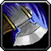

Dungeoneer
FighterWarrior
Arms
 Battle Stance:
Battle Stance:
A balanced combat stance.
Decreases threat generated by 20%.
Mortal Strike:
30 rage, instant cast
A vicious strike that deals weapon damage plus 85 and wounds the target, reducing the effectiveness of any healing by 50% for 10 sec.
BREAD AND BUTTER OF YOUR SPEC.
Charge:
25 yd range, instant cast
Charge an enemy, generate 15 rage, and stun it for 1 sec. Cannot be used in combat.
Overpower:
5 rage, instant cast
Instantly overpower the enemy, causing weapon damage plus 35. Only useable after the target dodges. The Overpower cannot be blocked, dodged or parried.
Heroic Strike:
15 rage, instant cast
A strong attack that increases melee damage by 157 and causes a high amount of threat.
 Thunder Clap:
Thunder Clap:
20 rage, instant cast
Blasts nearby enemies with thunder increasing the time between their attacks by 10% for 30 sec and doing 103 damage to them. Will affect up to 4 targets.
Rend:
10 rage, instant cast
Wounds the target causing them to bleed for 147 damage over 21 sec.
Slam:
15 rage, 1.5 sec cast
Slams the opponent, causing weapon damage plus 87.
Beserker Rage:
instant cast, 30 sec cooldown
The warrior enters a berserker rage, becoming immune to Fear and Incapacitate effects and generating extra rage when taking damage. Lasts 10 sec.
Execute:
15 rage, instant cast
Attempt to finish off a wounded foe, causing 600 damage and converting each extra point of rage into 15 additional damage. Only usable on enemies that have 20% or less health.
Sweeping Strike:
30 rage, instant cast, 30 sec cooldown
Your next 5 melee attacks strike an additional nearby opponent.
Battle Shout:
The warrior shouts, increasing the melee attack power of all party members within 20 yards by 130. Lasts 2 min.
Fury
Berserker Stance:
An aggressive stance. Critical hit chance is increased by 3% and all damage taken is increased by 10%.
Decreases threat generated by 20%.
Demoralizing Shout:
instant cast, 1.5 min cooldown
Demoralizes all enemies within 10 yards, reducing the damage they do to you by 20% for 8 sec.
 Intercept:
Intercept:
10 rage, instant cast, 25 yd range
Charge an enemy, causing 25 damage and stunning it for 3 sec.
Decreases threat generated by 20%.
Demoralizing Shout:
instant cast, 1.5 min cooldown
Demoralizes all enemies within 10 yards, reducing the damage they do to you by 20% for 8 sec.
Cleave:
20 rage, instant cast
A sweeping attack that does your weapon damage plus 50 to the target and his nearest ally.
 Intimidating Shout:
Intimidating Shout:
25 rage, instant cast, 10 yd range, 3 min cooldown
The warrior shouts, causing the targeted enemy to cower in fear. Up to 5 total nearby enemies will flee in fear. Lasts 8 sec.
Challenging Shout:
5 rage, instant cast, 10 min cooldown
Forces all nearby enemies to focus attacks on you for 6 sec.
Pummel:
10 rage, instant cast
Pummel the target for 20 damage. It also interrupts spellcasting and prevents any spell in that school from being cast for 4 sec.
Whirlwind:
25 rage, instant cast
In a whirlwind of steel you attack up to 4 enemies within 8 yards, causing weapon damage to each enemy.
Recklessness:
instant cast
The warrior will cause critical hits with most attacks and will be immune to Fear effects for the next 15 sec, but all damage taken is increased by 20%.
Protection
Defensive Stance:
instant cast
A defensive combat stance. Decreases damage taken by 10% and damage caused by 10%. Increases threat generated.
Increases threat generated by 30%.
Bloodrage:
instant cast, 1 min cooldown
Generates 10 rage at the cost of health, and then generates an additional 10 rage over 10 sec. The warrior is considered in combat for the duration.
The buff generates 1 rage per second.